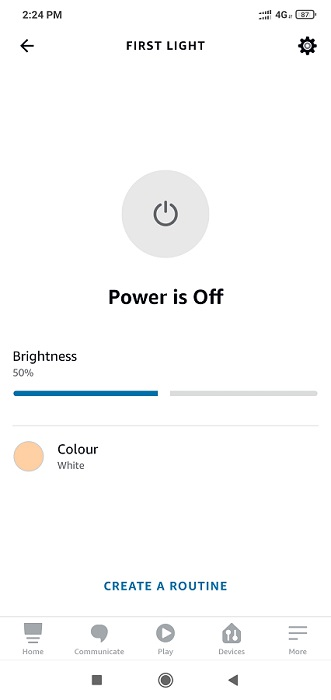
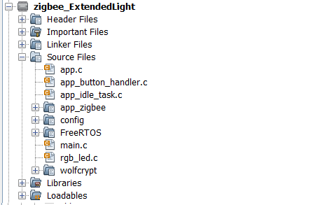
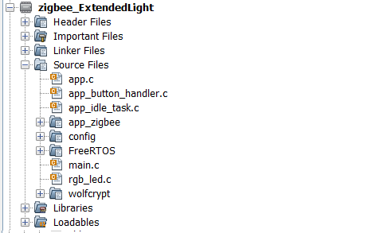

Zigbee Application Demo: Light control and Monitoring using Combined Interface
WBZ451 Curiosity Board
Devices (Device): | PIC32CX1012BZ25048(MCU) on WBZ451 module |
Peripherals (Used, On-Board): | RGB LED | User Button| UART-USB Converter|
Introduction
This page describes the demo steps for Light control and Monitoring using Combined Interface on WBZ451 Curiosity boards.
An overview of the demo is shown below.

Prerequisites :
-
Hardware Required
Tool Qty WBZ451 Curiosity Boards 2 Micro USB cable 2 Personal Computer 1 -
SDK Setup - SDK Setup
-
Terminal Software - TeraTerm
Demo Description
The demo applications demonstrates the Zigbee protocol functionality of PIC32CXBZ/WBZ family of devices and modules. It consists of a ZigBee 3.0 Coordinator and Router implemented as shown below :
| Application | Zigbee Logical Device Type | Functionality |
|---|---|---|
| Combined Interface | Coordinator | Device capable of controlling and monitoring other devices. It is typically a mains-powered device like a personal computer |
| Extended Lights | Router | Is a lighting device that can be switched on/off , brightness & color of the light can be adjusted via the color commands. |
To run the demo , we need 2 devices. One is the Combined Interface and the other is extended color light.
- One of the WBZ451 Curiosity board is programmed with Combined Interface which can act as Zigbee Gateway/Coordinator. Program the CI pre-compiled hex image by following steps on one curiosity board.
- Another WBZ451 Curiosity board is programmed with Extended Lights application which can act as Zigbee Router. Program the pre-compiled hex image by following Programming the precompiled hex file using MPLABX IPE on another curiosity board.
- If want to do changes in the demo code and would like to program/debug the customized code follow the instruction in Build and Program The Application
- If want to generate an application from scratch refer: Creating New Application Device Types
Zigbee device commissioning:
- The Zigbee router i.e. Extended Lights can be commissioned and brought to the existing zigbee network formed by Zigbee coordinator i.e. Combined Interface or can create new zigbee Distributed network (if there is no nearby network).
Zigbee Light control:
- Extended light RGB LED can be controlled from Zigbee Gateway of the same network.
- When the light status is changed the light change report will be sent to zigbee gateway through Zigbee communication.
On-board Resource Usage
| Sensor | Peripheral Used | I/O Pin | Comment | | —————— | ————————————- | ————- | ———————————————————————————————– | | LED Control | TC2 (WO0, WO1), TC3 (WO0) in PWM Mode | PB0, PB3, PB5 | RGB LED color control. | | Switch | EXTINT0 | PB4 | SW1 button in curiosity board to do Reset To Factory new |
Demo Steps:
The Zigbee light can be connected to any zigbee network.
-
The steps explained in Joining Light Device with Amazon Echo can be followed to connect to Amazon Echo, if Amazon Echo has Built-in Zigbee smart home hub.
-
The steps explained in Joining Light with WBZ451 Combined Interface (CI) Coordinator can be followed to connect with WBZ451 based combined interface which acts as Zigbee Coordinator.
Joining Light Device with Amazon Echo
- Light can be added to Alexa’s Zigbee network by voice commands or by using Alexa mobile app
- Voice Commands: Open Alexa to discover the Light device. Say “Discover my devices”. or
- Alexa App:
- Launch Alexa app, from the menu, select the Add Device.
- Select the type of smart home device “Light” and select other.
- Initiate Discover Devices
- Power on the Light device. The Light will be discovered and shown as light in Alexa app as shown below.
Note: Echo Plus is in discovery mode for 45 secs. Devices wanting to join Echo Plus should initiate joining/connecting procedure within this time limit for a successful join
Joining Light with WBZ451 Combined Interface (CI) Coordinator
# Hardware & Software Setup
-
Supply power to WBZ451 Curiosity Board consisting of Combined Interface application by connecting a USB cable. Power Supply (PS) Green LED will turn on when connect to PC.

-
The application activity is shown as “Console Log” through on board UART-USB converter
- Open Terminal(eg: Tera Term) with the setup as shown below to look for these logs
On the PC side virtual COM port connection that corresponds to the board shall have following settings:
- BAUD RATE: 115200 (as configured in SERCOM configuration)
- PARITY: None
- DATA BITS: 8
- STOP BITS: 1
- FLOW CONTROL: None
Additionally, local echo and sending line ends with line feeds shall be enabled in the PC serial terminal application.

# Network Formation (Coordinator - (Combined Interface))
- Follow the steps either case1 or case2 explained in Network Formation (Coordinator - (Combined Interface)) to open up the network in CI.
# Commissioning (Router - Extended Light)
- The Extended Lights can be connected to any zigbee gateway. It could be either Amazon Echo Plus or another Combined interface running on WBZ451 Curiosity Board. Here, we will discuss about the steps followed for WBZ451 Curiosity Board as a Zigbee gateway.
- Supply power to another WBZ451 Curiosity Board programmed with “Extended Light” by connecting a USB cable. Power Supply (PS) Green LED will turn on when connect to PC.
-
Follow step 2 for UART terminal Setup
- Success logs : When extended light successfully commissioned with Combined Interface below log will be seen.
<div style="text-align:center"><img src="assets/success_logs_ci_ext_lights.jpg" /></div>
# Light Control
- RGB LED on WBZ451 curiosity board is tied with Zigbee functionality. The LED color and brightness can be changed through Zigbee network .
-
RGB color control from Combined Interface
- The RGB color can be controlled from Combined Interface through console commands.
- RGB color is changed from Combined Interface, will be reflected in next received light attribute report in combined Interface
-
The network address of the light is needed to send light control commands to light.
- This network address can be got from Combined interface console log while commissioning was done. Refer to Step 4 success log for light network address

-
Another way to get the network address from light is executing the below command in light side.
Command: getNetworkAddress
Response: f088 </i>
-
The table below shows few commands for light control(on /off, brightness, hue & saturation). Refer to doc Serial Console Commands to get to know the different parameters of the commands.
Command Type Commands Parameter Details RGB LED ON onOff 0x0 0xf088 0x23 -on 0x23 zigbee end-point number used for Light RGB LED OFF onOff 0x0 0xf088 0x23 -off 0x23 zigbee end-point number used for Light RGB LED brightness change moveToLevel 0x0 0xf088 0x23 0x45 0x0 0x1 0x0 0x0 0x45 is the configurable brightness value RGB LED color change moveToHueAndSaturation 0x0 0xf088 0x23 0x45 0x67 0x0 0x0 0x0 0x45 and 0x67 are the configurable Hue and Saturation values
# Other Functionalities
- On board button actions:
- When the on board “User Button” is pressed for more than 10sec, it can delete all the networking information and will bring the device to factory default state. This functionality is available in both combined interface and light devices.
- Persistent Data Storage (PDS): The RGB light status (On/Off) and brightness values are stored in non-volatile memory called PDS. So, power off/on of extended light, these values persist and RGB LED will reflect accordingly. This PDS storage is tied to zigbee network.
- The light On/Off status and light brightness is being stored in non-volatile memory in this case. So, power off/on, the LED will be updated with light on/off and brightness values retrieved from previous transaction, whereas color values remain default HS = 0x00,0x7F
Programming the precompiled hex file using MPLABX IPE
-
Precompiled Hex file Extended light is located Extended Light
-
Follow the steps mentioned here
Caution: Users should choose the correct Device and Tool information
- Follow the steps for running the demo
Build and Program The Application
The source code of demo application is available here Extended Light . If want to do changes in the demo code and would like to program/debug the customized code follow the below instruction.
-
Open the “firmware/zigbee_ExtendedLight.X” MPLABX project from MPLABX
 
 -
Do your changes in the code. Clean and build your application by clicking on the Clean and Build button as shown below.

-
Program your application to the device, by clicking on the Make and Program button as shown below.

Creating Application Device Types From Scratch Using MCC
All the supported device types including this Extended Colour light projects can be generated by following the steps in Generating project from MCC